Home Page
-
The homepage of HR365 Employee Onboarding features two processes: one for onboarding employees and another for offboarding them.
-
My Active tasks: Displays all tasks assigned to the user that require action or completion.
The My Active Tasks section contains the following tabs:
- All – Displays all tasks assigned to the current user.
- Unassigned – Displays tasks belonging to the user's team that are not assigned to any team member. If the team has multiple members, any member can assign the task to themselves or another team member.
- Current – Displays pending tasks that are currently active and need to be completed.
- Upcoming – Displays tasks that have not yet started. Task availability is determined based on the onboarding employee's joining date.
- Overdue – Displays tasks that have exceeded their resolution or due date and are not yet completed.
- Completed – Displays all tasks that have been completed.
-
My Overdue Tasks: A task that remains incomplete within a specified number of days.
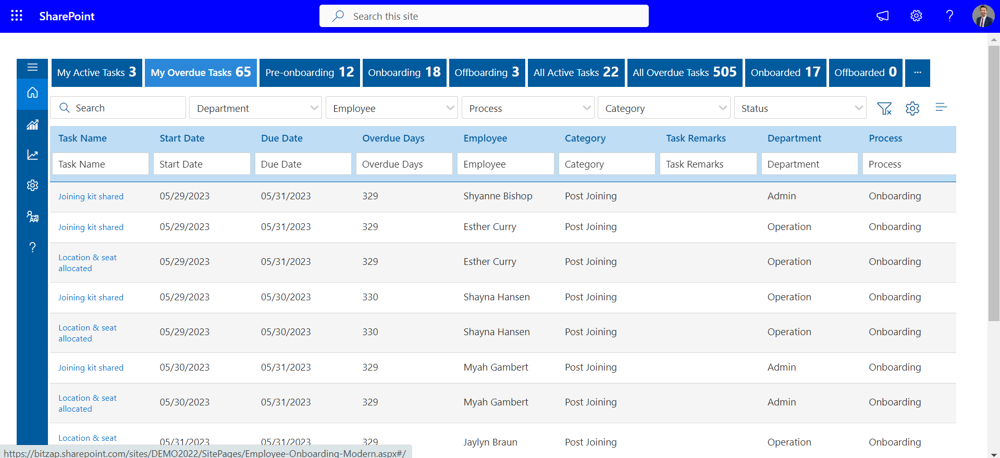
You can view the details of a task by clicking on its name.
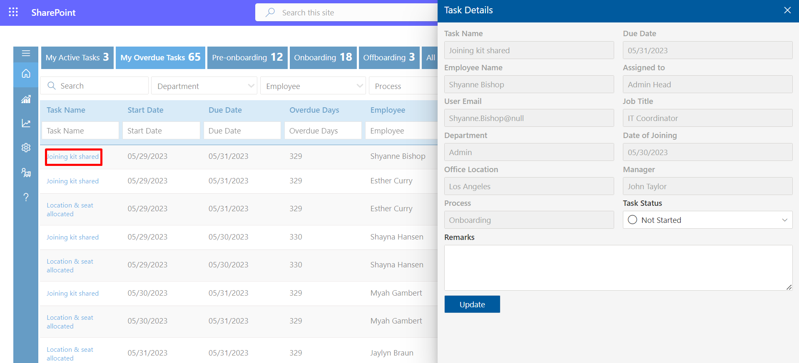
-
Pre-Onboarding:The Pre-Onboarding Documentation delineates the process and procedures to adhere to before a new employee formally joins the organization. This phase is vital for facilitating a seamless transition for the new hire, enabling them to achieve full productivity right from their first day.
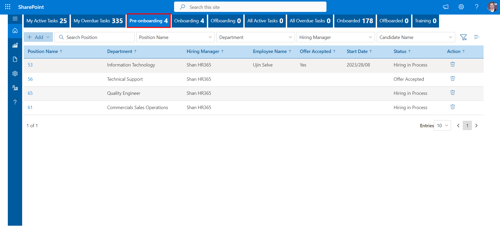
To add a new pre-onboard, click the +New button.
Adding Pre-Onboarding Info requires mandatory fields such as the candidate's name, email, position, and department.
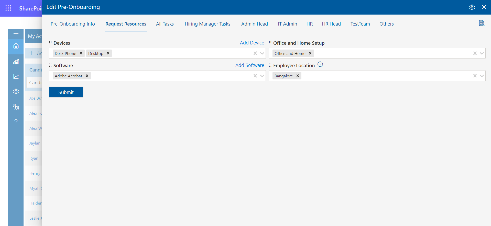
You can assign assets and licenses to the candidate. To assign assets, click the Add button to the right of the Device section. To assign licenses, click the +Add button in the Software section.
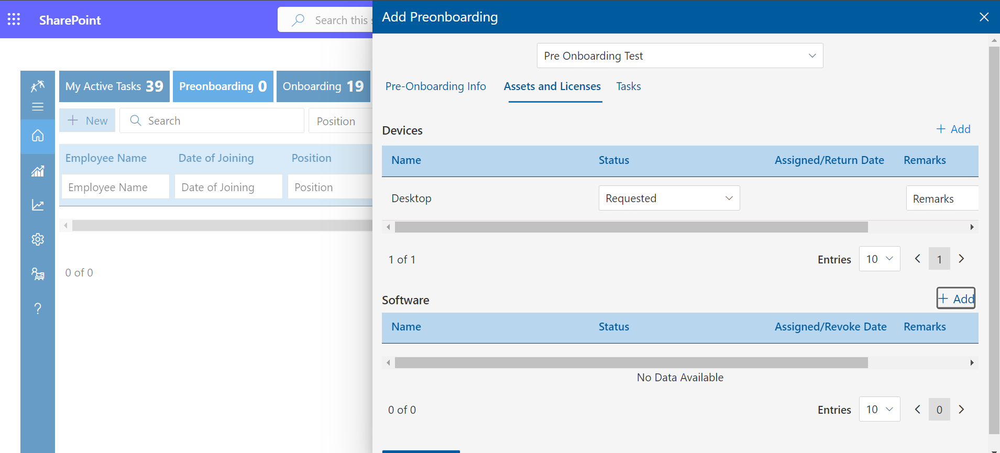
- The system now supports automatic transition from Pre-Onboarding to Onboarding upon approval.
-
Onboarding : Overview
Employee Onboarding 365 lets HR and admin teams manage the full onboarding lifecycle of a new hire from a single application. The process begins when the employee record is created and continues through group, team, asset, and license assignment, and task completion by the responsible teams (Admin, HR, IT). Once every assigned task is marked complete, the employee automatically moves from the Onboarding stage to the Onboarded stage.
Prerequisites
- • The application ships with a set of default Teams (e.g. Admin, HR, IT, HR Head) and default Tasks already configured, so onboarding can begin without any setup. Admins can use these defaults as-is, or create new / edit existing Teams and Tasks to match their organization.
- • Teams are managed under Settings → Add/Edit Teams. Each team (e.g. Admin, HR, IT) can contain multiple members; when a task is assigned to a team, it is assigned to every member in that team.
- • Tasks are managed under Settings → Task Administration → Task, with a Task Owner (team) set for each task.
- • A Task Template must be created (or an existing default template used) under Settings → Task Administration → Task Templates, grouping the relevant tasks for the Onboarding / Preonboarding / Offboarding process.
1. Onboarding Dashboard
The dashboard is the starting point for the onboarding process. It is organized into tabs — My Active Tasks, Preonboarding, Onboarding, Offboarding, All Active Tasks, Onboarded, and Offboarded — that let admins and HR track every employee's stage at a glance. Selecting a tab filters the table below to show only employees currently in that stage, along with details such as Employee Name, Date of Joining, Position, Department, Employee Type, Manager, Status, and Requested By.
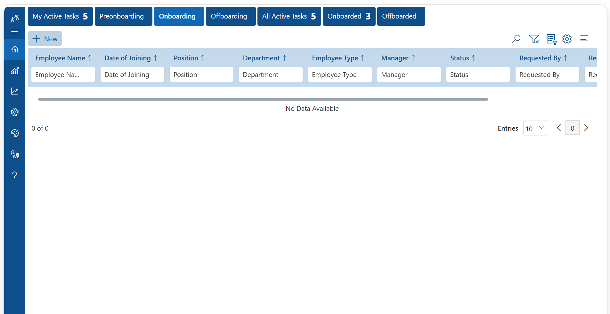
Figure 1: Onboarding dashboard showing stage tabs (Preonboarding, Onboarding, Offboarding, Onboarded, Offboarded) and the employee list.
To begin onboarding a new employee, click the New button above the table. This opens the “Onboard an Employee” form, which is organized into tabs: Basic Info, Confidential, Groups, Teams, Assets and Licenses, and Tasks.
2. Step 1 – Enter Employee Information
The Basic Info tab captures the new hire's core details. Required fields (marked with *) include Employee Name, Employee ID, User Email, Manager, Department, Position, Employee Type, Date of Joining, Personal Email, Contact Number, Location, Date of Birth, Onboarding Start Date, and Gender. Optional fields include Recruiter Name, Alternate Number, Present Employer, and Remarks.
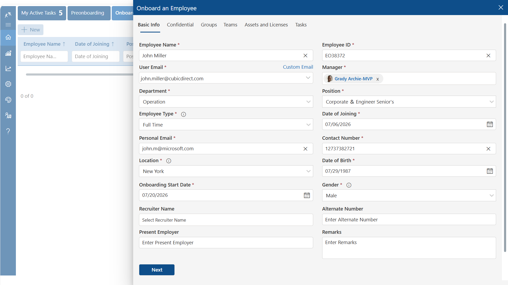
Figure 2: Basic Info tab of the “Onboard an Employee” form.
Once all required fields are completed, click Next to proceed to the Groups tab, and continue through Teams, Assets and Licenses, and Tasks in sequence.
3. Step 2 – Assign Groups and Teams
The Groups tab lets you add the employee to relevant Microsoft 365 / SharePoint groups. The Teams tab lists all teams configured in the system, each with a Team Name and Description. Select the checkbox next to every team the employee should be added to (for example, department-specific Teams channels or project teams), then click Next.
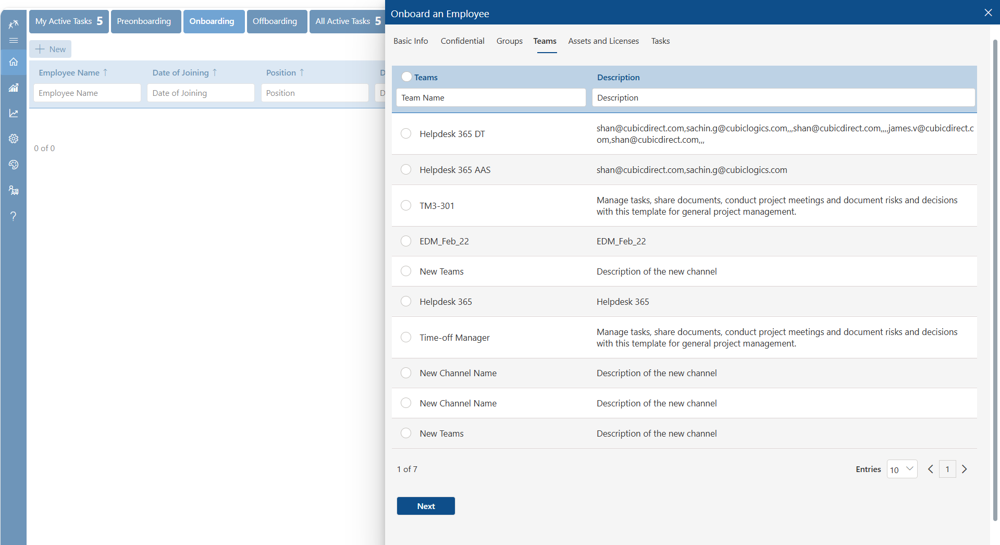
Figure 3: Teams tab — selecting Microsoft Teams the employee should be added to.
Note: the Teams listed here are Microsoft Teams / SharePoint channels the employee will join — this is separate from the internal “Teams” used for task ownership (Admin, HR, IT), which are configured under Settings → Add/Edit Teams and covered in Section 6.
4. Step 3 – Assign Assets and Licenses
The Assets and Licenses tab has two sections: Device and Software. Under Device, click Add to assign hardware such as laptops, setting the Status (e.g. Assign), Assigned/Return Date, and Remarks. Under Software, click Add to assign licenses — the panel shows each license's name along with live availability (e.g. “9706 of 10000 licenses available”), and lets you set Status, Assigned/Revoke Date, and Remarks for each one.
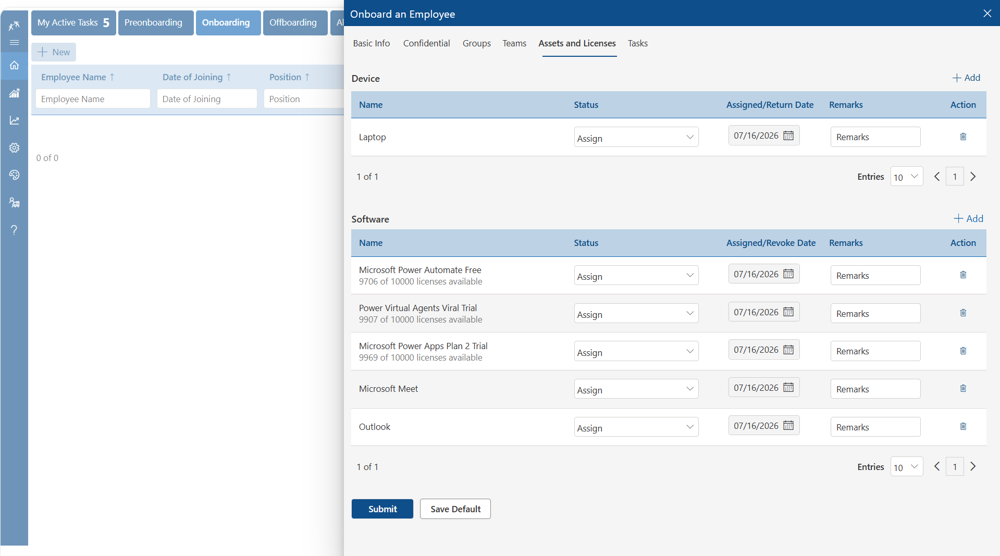
Figure 4: Assets and Licenses tab — assigning a device and software licenses to the employee.
After assigning the required devices and licenses, click Submit to save the record (or Save Default to store this configuration as a default for future onboarding requests), then proceed to the Tasks tab.
5. Step 4 – Assign the Task Template
The Tasks tab is where the onboarding checklist is applied to the employee. Under Task Template, search for and select the template that should govern this employee's onboarding (e.g. “Onboarding Tasks”). Once selected, the tab displays every task from that template — Task Name, Start Date, Due Date, Priority, and Assigned To — automatically populated based on how each task was configured (see Section 7).
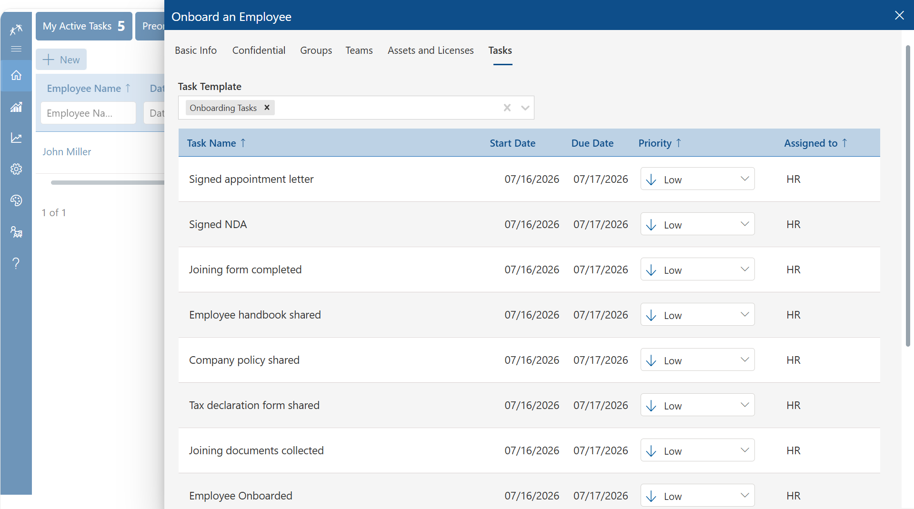
Figure 5: Tasks tab — the selected Onboarding Tasks template applied to employee John Miller, showing tasks such as Signed appointment letter, Signed NDA, Joining form completed, and Employee Onboarded, each assigned to HR.
Each task shown here is assigned to the team set as its Task Owner (for example, HR, Admin, or IT). Every member of that team can see and complete the task from their own “My Active Tasks” view. Once all tasks tied to the employee's template are marked complete, the employee's record automatically moves from the Onboarding tab to the Onboarded tab on the dashboard.
6. Prerequisite Setup: Creating and Managing Teams
Before tasks can be assigned, the teams that will own them (Admin, HR, IT, etc.) must exist in the system. Teams are managed centrally from Settings, and any member added to a team automatically becomes eligible to receive and complete tasks assigned to that team.
6.1 Locate Add/Edit Teams in Settings
Navigate to Settings. Under the “Users, Roles and Permissions” section, select Add/Edit Teams.
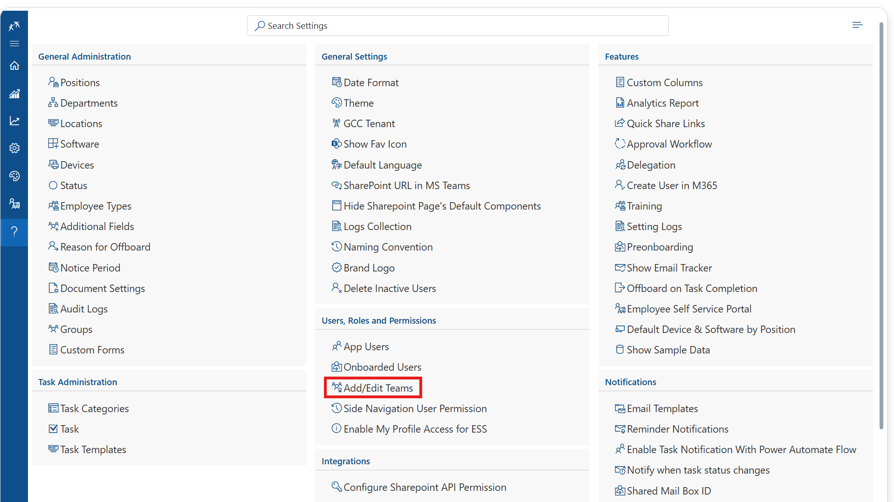
Figure 6: Settings screen — Add/Edit Teams under Users, Roles and Permissions.
6.2 Task Administration section
The Task Administration section (left navigation) is where Task Categories, Task, and Task Templates are managed — these are covered in Section 7. It sits alongside General Administration and General Settings on the same Settings screen.
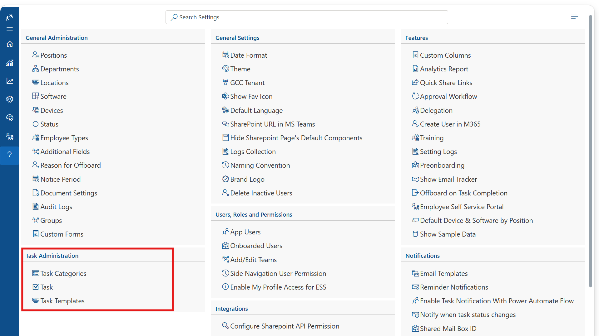
Figure 7: Settings screen — Task Administration section (Task Categories, Task, Task Templates).
6.3 Create or edit a team
On the Teams Permissions panel, click Add to create a new team, or select an existing team (e.g. Admin, IT, HR, HR Head) to edit it. In the Edit Teams panel, enter the Teams Name and add one or more people under Teams Members — a single team can contain multiple users. When a task is later assigned to this team as its Task Owner, it is assigned to every member listed here, and any of them can complete it.
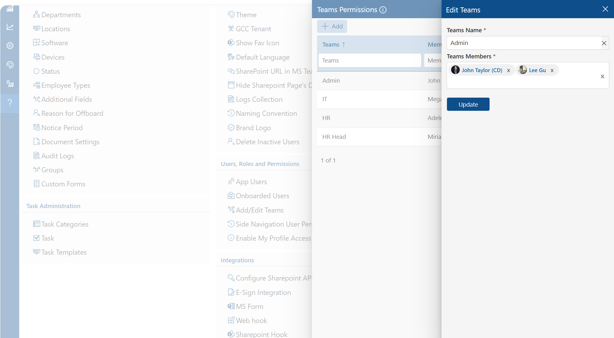
Figure 8: Teams Permissions list and Edit Teams panel — adding members (e.g. John Taylor, Lee Gu) to the Admin team.
7. Prerequisite Setup: Creating Tasks and Task Templates
7.1 Create a Task
From Settings → Task Administration → Task, click Add to open the Add Task panel. Configure the following fields:
- Task Name – a short, descriptive name (e.g. “Signed appointment letter”).
- Process Type – the stage the task belongs to (e.g. Onboarding, Preonboarding, Offboarding).
- Category – groups related tasks (e.g. Post Joining).
- Resolution Days – the number of days allowed to complete the task.
- Department – optional department scoping for the task.
- Priority – Low, Medium, or High.
- Task Owner – the team responsible for completing the task (e.g. Admin, HR, or IT). This determines which team's members the task is assigned to.
- Task Dependency – optionally link this task to another task that must complete first.
- Description, Active toggle, and Task Start Date rules (e.g. same day as Date of Joining, a number of days before/after, or a custom date), plus optional Attachments.
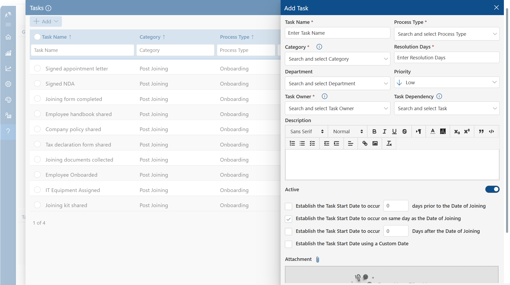
Figure 9: Task list (left) and Add Task panel (right) — configuring Task Name, Process Type, Category, Resolution Days, Priority, and Task Owner.
Repeat this for every task needed across the onboarding journey (e.g. Signed appointment letter, Signed NDA, Joining form completed, Employee handbook shared, Company policy shared, Tax declaration form shared, Joining documents collected, IT Equipment Assigned, Joining kit shared, Employee Onboarded).
7.2 Create a Task Template
From Settings → Task Administration → Task Templates, create a new template (e.g. “Onboarding Tasks”) and select which of the tasks created in Section 7.1 should be included for that process. A separate template can be built for each process type — Preonboarding, Onboarding, and Offboarding — so that only the relevant checklist is applied depending on which stage the employee is in.
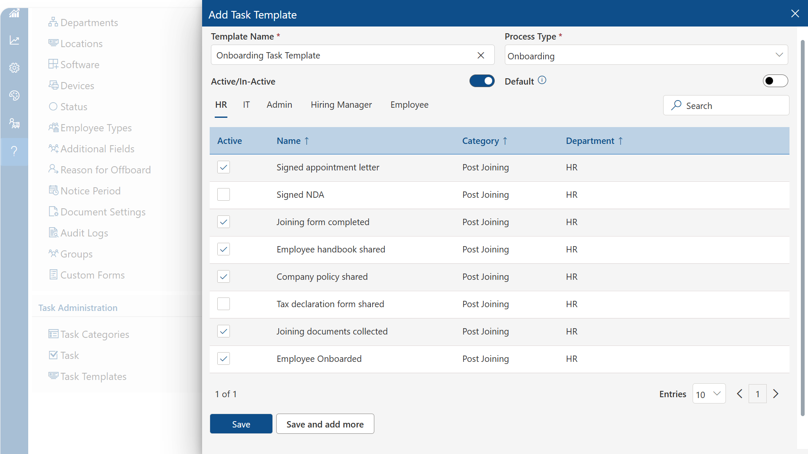
-
Offboarding: You have the ability to conduct offboarding procedures for personnel directly from this section.
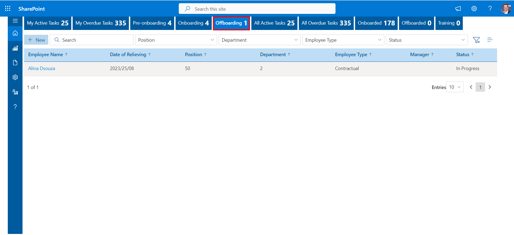
By clicking on the "+New" button, you can initiate the offboarding process for an employee.
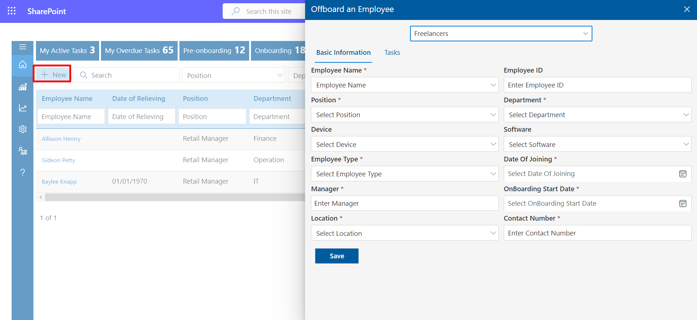
-
All Active Tasks: In this section, you'll find a list of tasks that require completion.
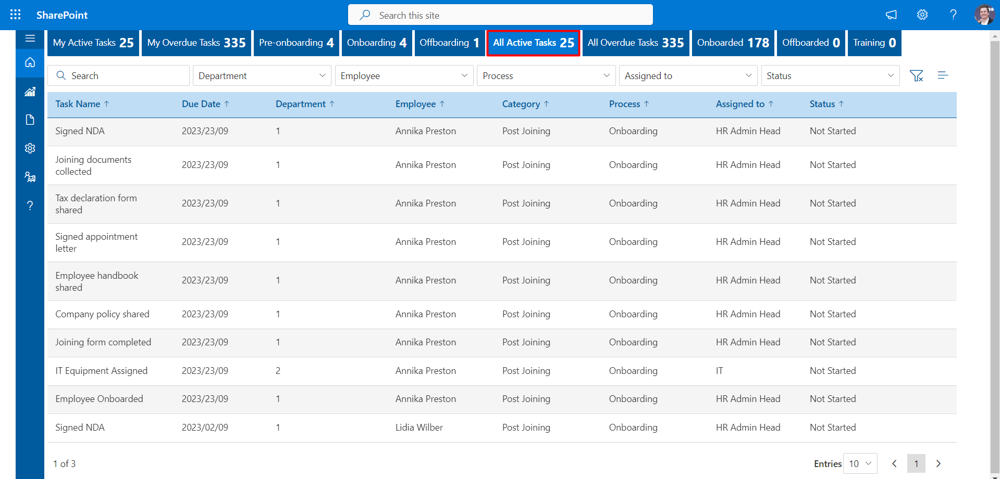
-
All Overdue Tasks: In this section, you'll find individuals who haven't completed their tasks within a designated timeframe.
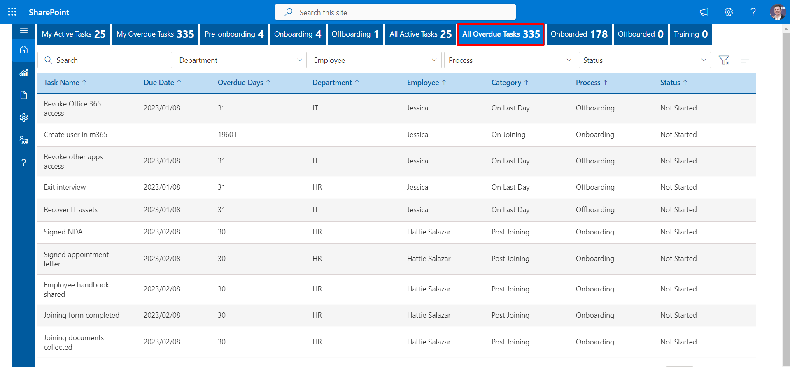
-
Onboarded: Here is a list of employees who have been onboarded recently.
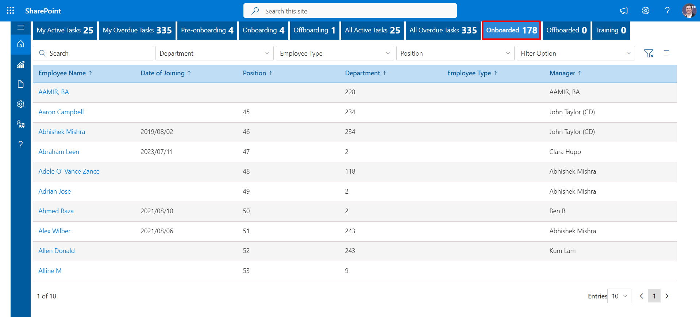
-
Offboarded: Employees who have been offboarded are listed.
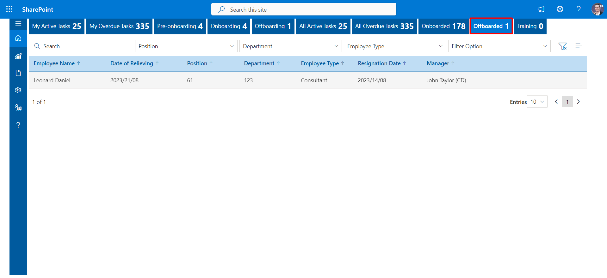
-
Training This feature allows administrators to add members or employees to the system,
ensuring that each added member receives an email notification containing pertinent information,
including a timestamp and date stamp.
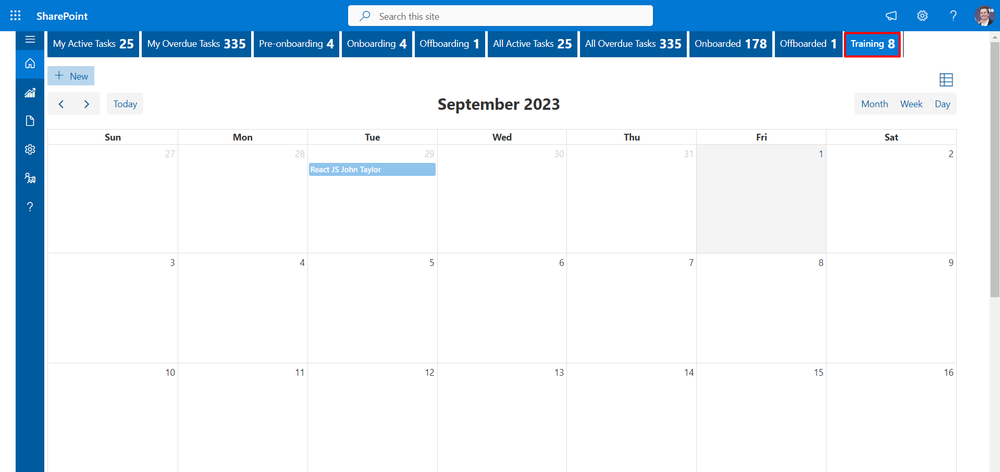
-
-
Position :
Administrators have the ability to include positions as part of the hiring process before
recruiting employees.
- To proceed further, click on the "Position" tab.
- To add a new position, click on the "+Add" button.
- Complete the details as per the requirements for hiring an employee.
- Then, Click on Save Button.
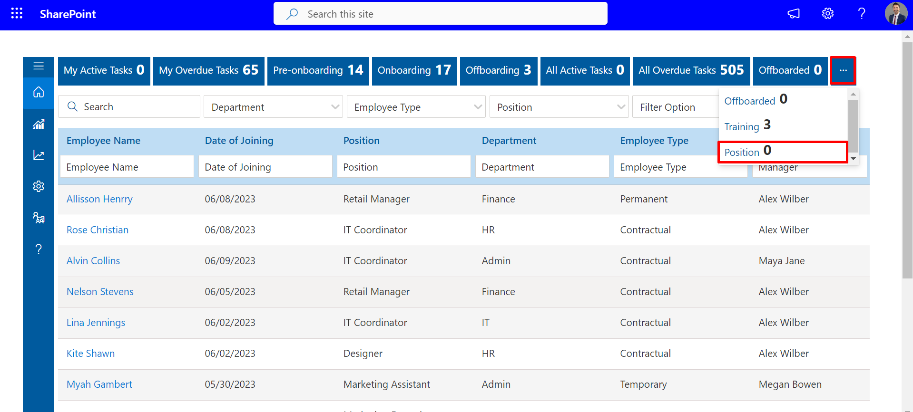
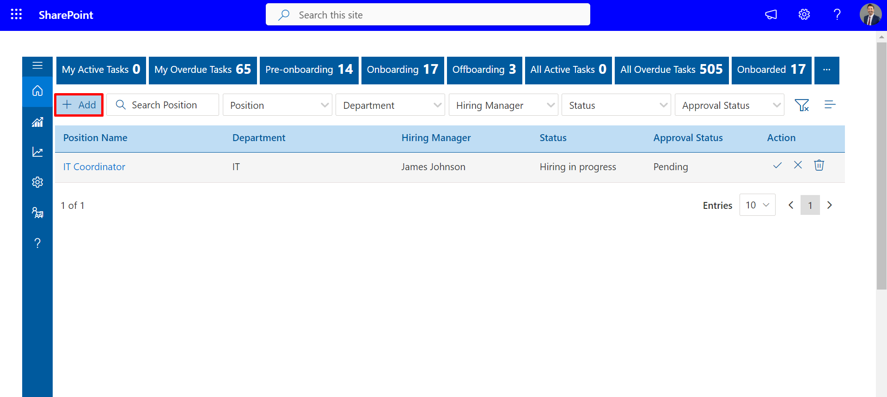
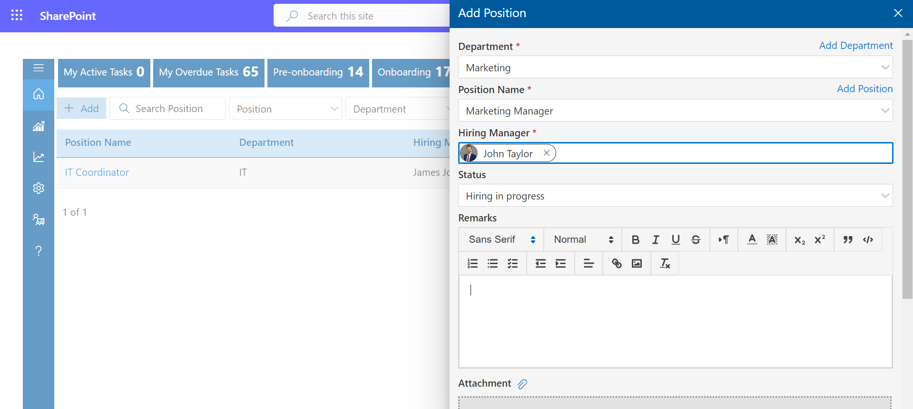
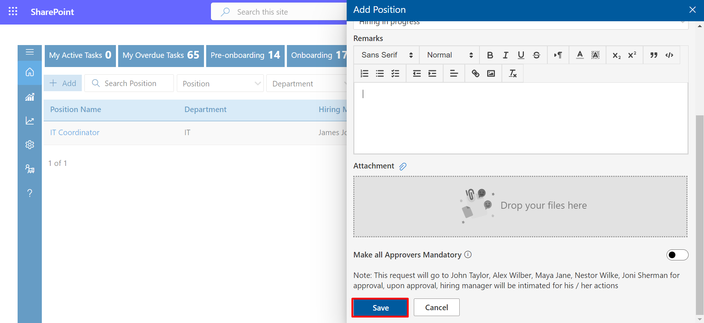
- Approval Tracking: You can view the approval tracking for the position by clicking on the position name, as demonstrated below.
- Probation Period Process for Onboarding Employees Overview
- Open the required onboarding custom form.
- Search for the field “Probationary Period” from the available fields section.
- Drag and drop the field into the selected fields area.
- Save the form.
- Create a new onboarding request.
- Fill in employee details.
- Select the required probation duration/days in the Probationary Period field.
- Submit the onboarding request.
- The system calculates the probation end date based on the employee’s Date of Joining and selected probation period.
- The onboarding request remains active until the probation process is completed.
- A task named “Probation Period Task” is automatically created.
- The task is assigned to the employee’s reporting manager.
- The task appears under: My Active Tasks and Current Tasks.
- Until the probation task is marked as Completed, the employee will continue to appear in the Onboarding section, and the onboarding request status remains active/in progress.
- Once the manager completes the probation task, the employee is moved from the onboarding stage, and the onboarding lifecycle is considered completed.
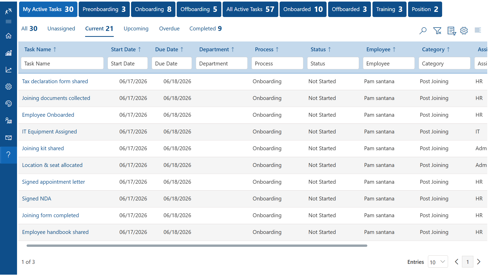
In home page menu bar contains:
1) Click on the employee’s name from the Pre-Onboarding list. Select the “Move to Onboarding” option.
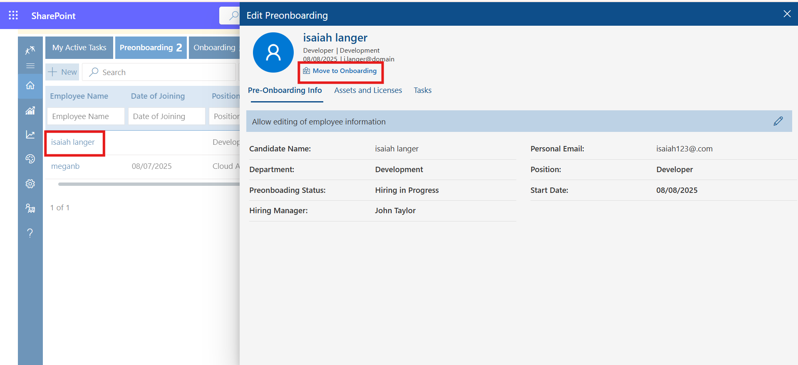
2)Complete the required details and confirm by clicking the “Yes” button.
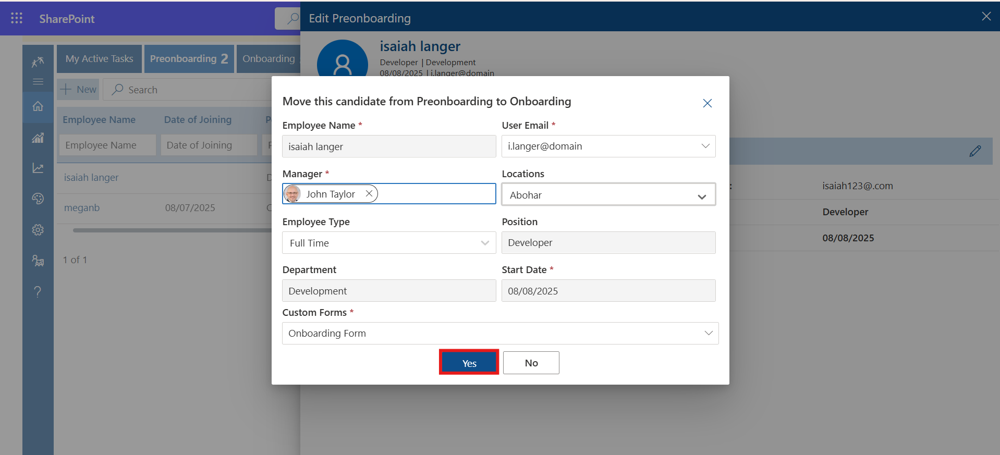
3) The candidate will then be automatically transitioned to the Onboarding stage.
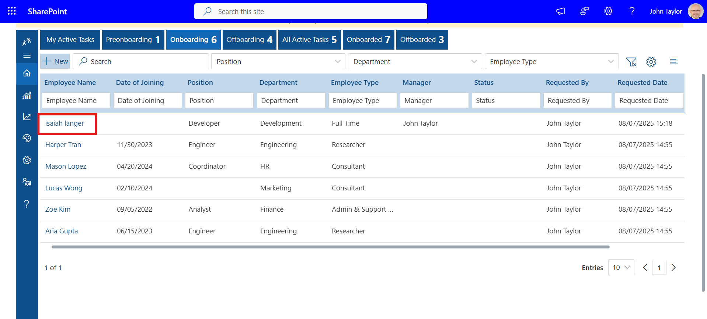
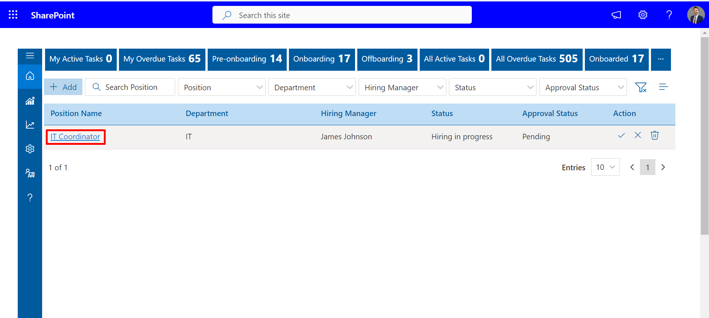
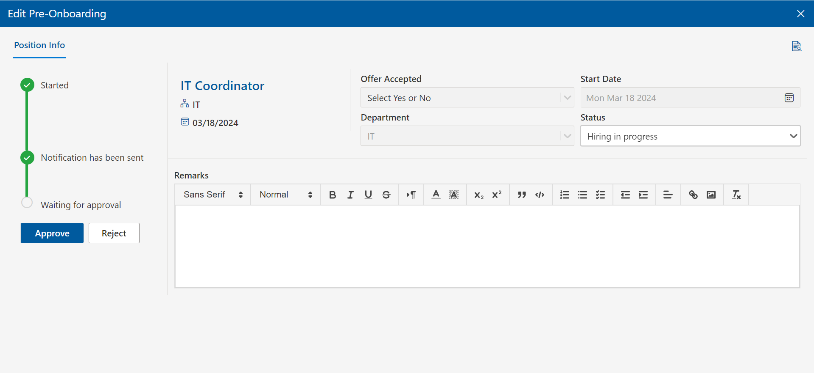
This knowledge base document explains the process of managing the Probation Period for employees during onboarding. The feature allows HR/Admin users to define a probation duration while onboarding an employee, automatically create a probation task for the employee’s manager, and track the probation status until completion.
Probation Period Process
Step 1: Add “Probationary Period” Field in Custom Form
Navigation: Settings → Custom Forms → Edit Onboarding Form
Steps:
Reference: The “Probationary Period” field should be added to the onboarding form configuration.
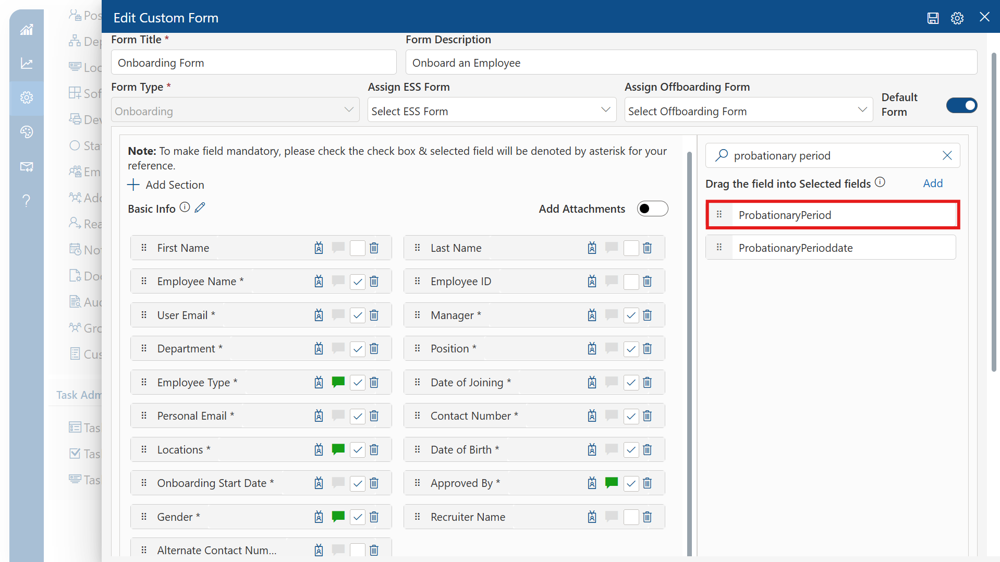
Step 2: Select Probation Duration While Onboarding Employee
During employee onboarding:
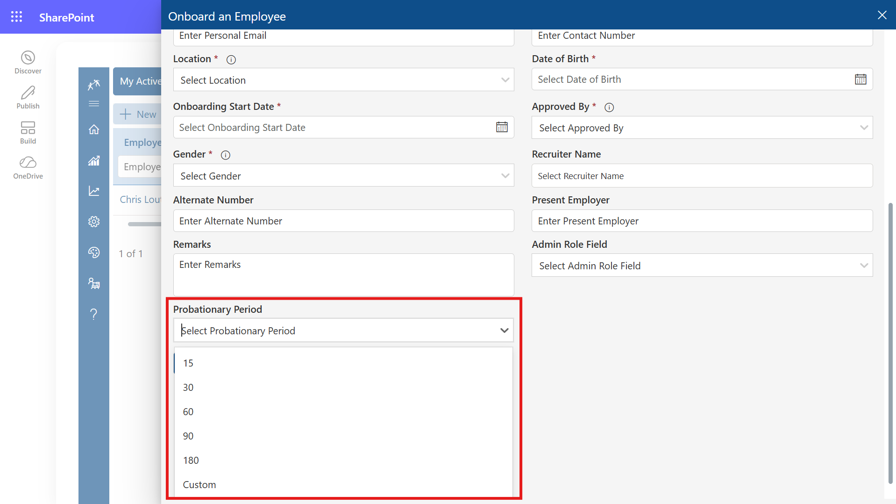
Expected Behaviour:
Step 3: Automatic Probation Task Creation
After the onboarding request is submitted:
Task Details Include:
| Detail Field | Value Type / Context |
|---|---|
| Employee Name | Name of the onboarding employee |
| User Email | The employee's official email address |
| Department / Job Title | Assigned organizational department and position |
| Date of Joining / Manager | Official start date and assigned reporting authority |
| Due Date / Process Type | Calculated deadline date; Process Type is Onboarding |
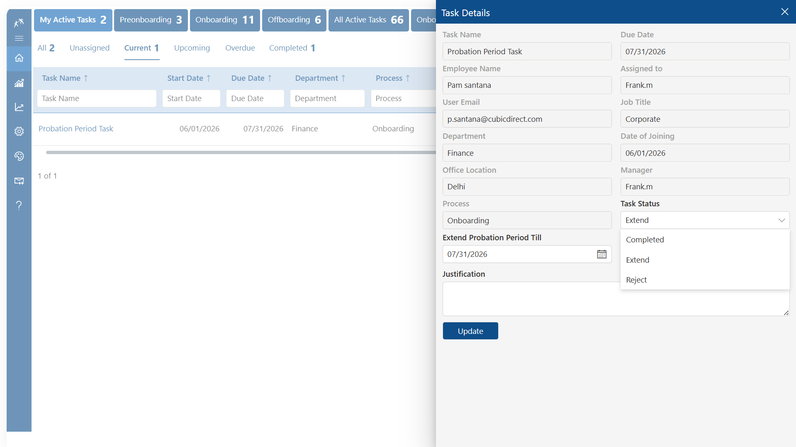
Step 4: Manager Actions on Probation
The assigned manager can review the employee’s probation and take one of the following actions:
| Available Action | System Behaviour & Requirements |
|---|---|
| 1. Complete | Marks the employee probation as successfully completed. The employee onboarding process is finalized and the employee moves out of the onboarding section. |
| 2. Reject | Marks the probation as rejected. HR/Admin can take further action based on company policy. |
| 3. Extend | Extends the employee probation period. Manager must explicitly provide an Extended probation date and a Justification/comments. |
Step 5: Employee Visibility in Onboarding
Important Behaviour: